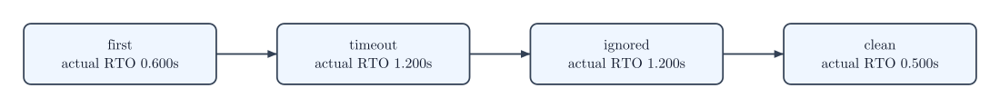
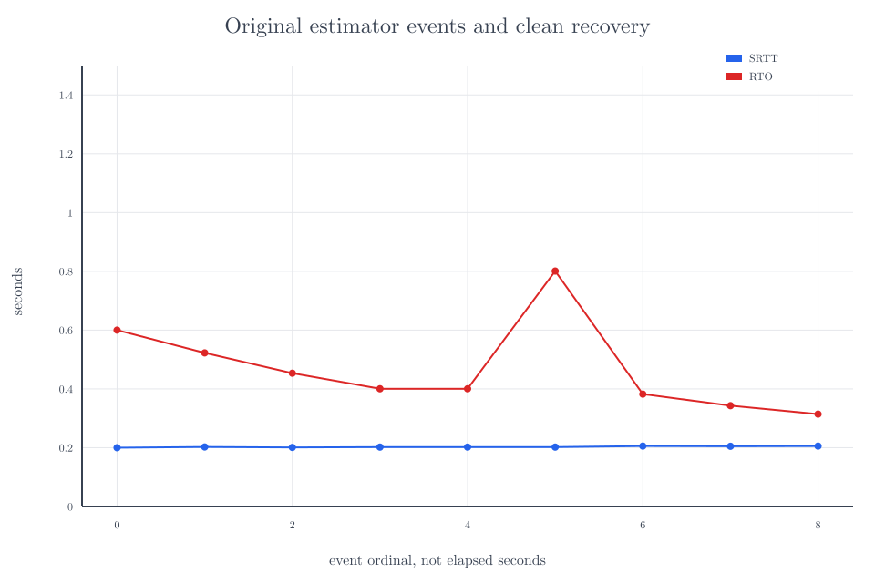
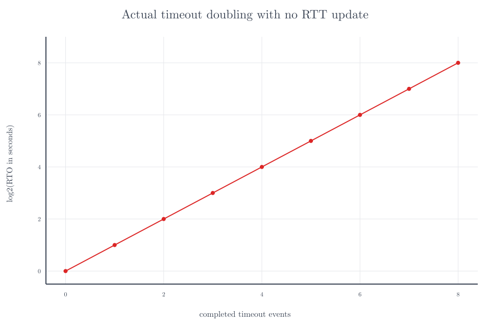
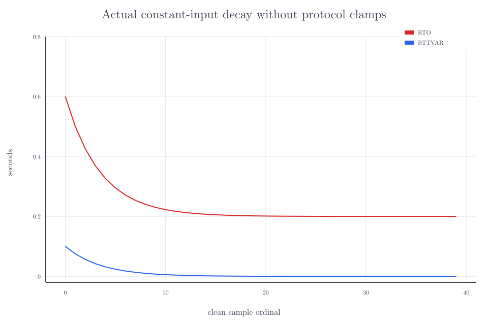

Karn's ambiguity rule and the actual timeout state
Abstract
An ACK after retransmission may not identify which transmission it acknowledges. Karn's rule avoids using that ambiguous RTT sample. This report inspects actual estimator transitions, retains the original nine-event sequence, and distinguishes an educational smoother from a complete TCP timer. Timeout backoff, ignored samples, clean recovery and numerical failures are explicit; native before/after snapshots come from the producing state transition.
Ignore an ambiguous sample without undoing backoff
Initialize from a clean .2-second RTT, double the timeout, ignore an ambiguous .8-second ACK, then accept a new clean .2-second sample. The diagram reads each committed event's actual RTO and action. Its arrows represent estimator events, not packet transmissions or elapsed network time.
#include <dm/dm.hpp>
int main() {
std::filesystem::create_directories("build");
dm::algorithms::KarnEstimator k;
const std::vector<dm::algorithms::KarnEvent> events = {k.ack(.2),
k.timeout(),
k.ack(.8, true),
k.ack(.2)};
const char *names[] = {"ignored", "first", "clean", "timeout"};
dm::graphics::Diagram d;
std::print("| event | action | SRTT before | RTO before | SRTT after | RTO after |\n| ---: | --- | ---: " "| ---: | ---: | ---: |\n");
for (std::size_t i = 0; i < events.size(); ++i) {
const auto &e = events[i];
std::print("| {} | {} | {:.9f} | {:.9f} | {:.9f} | {:.9f} |\n", i,
names[int(e.action)], e.before.srtt, e.before.rto,
e.after.srtt, e.after.rto);
d.node(std::to_string(i), {5. * i, 0},
std::format("{}\nactual RTO {:.3f}s", names[int(e.action)],
e.after.rto));
if (i)
d.edge(std::to_string(i - 1), std::to_string(i));
}
d.save_svg("build/karn_events.svg");
}| event | action | SRTT before | RTO before | SRTT after | RTO after |
|---|---|---|---|---|---|
| 0 | first | 0.000000000 | 1.000000000 | 0.200000000 | 0.600000000 |
| 1 | timeout | 0.200000000 | 0.600000000 | 0.200000000 | 1.200000000 |
| 2 | ignored | 0.200000000 | 1.200000000 | 0.200000000 | 1.200000000 |
| 3 | clean | 0.200000000 | 1.200000000 | 0.200000000 | 0.500000000 |

Separate measurement ambiguity from smoothing
The first clean sample R initializes mean R and deviation R/2. Later clean updates use the old mean in the deviation calculation:
An ignored ACK changes no field. A timeout doubles current RTO without updating SRTT or RTTVAR. A subsequent clean sample recomputes RTO and can reduce accumulated backoff. Retransmitted samples are discarded before validation because their numeric RTT is unused.
This is an educational transition model. It omits clock granularity, a minimum/maximum RTO, timestamp disambiguation, packet sequence state and actual timer management. A value below one second here is therefore not evidence that the implementation is a complete RFC6298 TCP timer. Samples and all state values use seconds; horizontal event indices below are not seconds.
Keep the original nine events
The original sequence contains four clean samples around .2 seconds, an ignored retransmitted ACK of .8, a timeout, and three clean recovery samples. We retain that exact order as a synthetic estimator experiment without asserting a packet-level causal chronology.
#include <dm/dm.hpp>
int main() {
std::filesystem::create_directories("build");
dm::algorithms::KarnEstimator k(1);
struct Input {
double sample;
bool retransmitted;
bool timeout;
};
const std::vector<Input> inputs = {{.20, false, false}, {.22, false, false},
{.19, false, false}, {.21, false, false},
{.80, true, false}, {0, false, true},
{.23, false, false}, {.20, false, false},
{.21, false, false}};
std::vector<double> x, mean, rto;
std::print("| event | action | RTT sample | SRTT | RTTVAR | actual RTO |\n| ---: | --- | ---: | ---: | " "---: | ---: |\n");
const char *names[] = {"ignored", "first", "clean", "timeout"};
for (std::size_t i = 0; i < inputs.size(); ++i) {
const auto &s = inputs[i];
const auto e =
s.timeout ? k.timeout() : k.ack(s.sample, s.retransmitted);
std::print("| {} | {} | {:.9f} | {:.12f} | {:.12f} | {:.12f} |\n", i,
names[int(e.action)], e.sample, e.after.srtt, e.after.rttvar,
e.after.rto);
x.push_back(i);
mean.push_back(e.after.srtt);
rto.push_back(e.after.rto);
}
auto p = dm::graphics::RPlot::create();
p.line(x, mean, "SRTT", {37, 99, 235}, 2).points(x, mean, "", {37, 99, 235},
4).line(x, rto, "RTO",
{220, 38, 38}, 2).points(x, rto, "", {220, 38, 38}, 4).title("Original estimator events and clean recovery").x_label("event ordinal, not elapsed seconds").y_label("seconds").y_limits(0, 1.5).save_svg("build/karn_original.svg");
}| event | action | RTT sample | SRTT | RTTVAR | actual RTO |
|---|---|---|---|---|---|
| 0 | first | 0.200000000 | 0.200000000000 | 0.100000000000 | 0.600000000000 |
| 1 | clean | 0.220000000 | 0.202500000000 | 0.080000000000 | 0.522500000000 |
| 2 | clean | 0.190000000 | 0.200937500000 | 0.063125000000 | 0.453437500000 |
| 3 | clean | 0.210000000 | 0.202070312500 | 0.049609375000 | 0.400507812500 |
| 4 | ignored | 0.800000000 | 0.202070312500 | 0.049609375000 | 0.400507812500 |
| 5 | timeout | 0.000000000 | 0.202070312500 | 0.049609375000 | 0.801015625000 |
| 6 | clean | 0.230000000 | 0.205561523437 | 0.044189453125 | 0.382319335938 |
| 7 | clean | 0.200000000 | 0.204866333008 | 0.034532470703 | 0.342996215820 |
| 8 | clean | 0.210000000 | 0.205508041382 | 0.027182769775 | 0.314239120483 |

Reject invalid updates before committing any state
Initial timeout must be finite and positive. A clean RTT must be finite and nonnegative; a zero clean sample is allowed and can produce a zero RTO because no minimum/granularity is modeled. Invalid clean samples and produced overflow throw without changing any field. An ignored NaN sample remains ignored and leaves the full state unchanged. These are input/transition contracts rather than simulated packet-loss outcomes.
#include <dm/dm.hpp>
int main() {
std::filesystem::create_directories("build");
dm::algorithms::KarnEstimator k;
const auto ignored = k.ack(std::numeric_limits<double>::quiet_NaN(), true);
bool bad = false, overflow = false;
try {
(void) k.ack(-1);
} catch (const std::invalid_argument &) {
bad = true;
}
try {
(void) k.ack(std::numeric_limits<double>::max() / 2);
} catch (const std::overflow_error &) {
overflow = true;
}
std::print("| control | initialized | actual SRTT | actual RTO |\n| --- | --- | ---: | ---: |\n| " "ignored NaN | {} | {} | {} |\n| invalid/overflow unchanged | {} | {} | {} |\n",
ignored.after.initialized, ignored.after.srtt, ignored.after.rto,
k.initialized(), k.srtt(), k.rto());
if (!bad || !overflow || k.initialized() || k.rto() != 1)
throw std::runtime_error("atomic update guards");
dm::algorithms::KarnEstimator backed(1);
std::vector<double> x, y;
std::print("\n| timeout count | actual RTO |\n| ---: | ---: |\n");
for (int i = 0; i <= 8; ++i) {
if (i)
(void) backed.timeout();
std::print("| {} | {} |\n", i, backed.rto());
x.push_back(i);
y.push_back(std::log2(backed.rto()));
}
auto p = dm::graphics::RPlot::create();
p.line(x, y, "", {220, 38, 38}, 2).points(x, y, "", {220, 38, 38}, 4).title(
"Actual timeout doubling with no RTT update").x_label(
"completed timeout events").y_label("log2(RTO in seconds)").y_limits(
-.5, 9).save_svg("build/karn_controls.svg");
}| control | initialized | actual SRTT | actual RTO |
|---|---|---|---|
| ignored NaN | false | 0 | 1 |
| invalid/overflow unchanged | false | 0 | 1 |
| timeout count | actual RTO |
|---|---|
| 0 | 1 |
| 1 | 2 |
| 2 | 4 |
| 3 | 8 |
| 4 | 16 |
| 5 | 32 |
| 6 | 64 |
| 7 | 128 |
| 8 | 256 |

Check the constant-input recurrence
For repeated clean .2-second RTT samples after first initialization, the mean remains .2. The initial deviation .1 is multiplied by .75 on every later sample. The known recurrence .1 times .75 to the power i is a control for update order; the program plots actual states and checks the relation within floating tolerance. There is no arbitrary one-second clamp hiding the estimator's asymptote in this teaching model.
#include <dm/dm.hpp>
int main() {
std::filesystem::create_directories("build");
dm::algorithms::KarnEstimator k;
std::vector<double> x, y, v;
std::print("| clean sample ordinal | actual SRTT | actual RTTVAR | actual RTO |\n| ---: | ---: | ---: | " "---: |\n");
for (int i = 0; i < 40; ++i) {
const auto e = k.ack(.2);
if (std::fabs(e.after.rttvar - .1 * std::pow(.75, i)) > 1e-15)
throw std::runtime_error("constant input recurrence");
if (i < 4 || i == 9 || i == 19 || i == 39)
std::print("| {} | {:.12f} | {:.12e} | {:.12f} |\n", i,
e.after.srtt, e.after.rttvar, e.after.rto);
x.push_back(i);
y.push_back(e.after.rto);
v.push_back(e.after.rttvar);
}
auto p = dm::graphics::RPlot::create();
p.line(x, y, "RTO", {220, 38, 38}, 2).line(x, v, "RTTVAR", {37, 99, 235}, 2).title("Actual constant-input decay without protocol clamps").x_label("clean sample ordinal").y_label("seconds").y_limits(-.02, .8).save_svg("build/karn_profile.svg");
}| clean sample ordinal | actual SRTT | actual RTTVAR | actual RTO |
|---|---|---|---|
| 0 | 0.200000000000 | 1.000000000000e-01 | 0.600000000000 |
| 1 | 0.200000000000 | 7.500000000000e-02 | 0.500000000000 |
| 2 | 0.200000000000 | 5.625000000000e-02 | 0.425000000000 |
| 3 | 0.200000000000 | 4.218750000000e-02 | 0.368750000000 |
| 9 | 0.200000000000 | 7.508468627930e-03 | 0.230033874512 |
| 19 | 0.200000000000 | 4.228282585245e-04 | 0.201691313034 |
| 39 | 0.200000000000 | 1.340878021552e-06 | 0.200005363512 |

Each event uses constant arithmetic and owned scalar storage, with no allocation or global state. Copies of an estimator evolve independently; concurrent mutation of one object requires synchronization. The new event-returning methods and the legacy void methods share exactly one transition implementation, so diagnostics do not replay or perturb the estimate. Finite overflow is rejected atomically, rather than retaining an infinite timeout. No dataset is needed for these controlled protocol-estimator events.
Independent operation-order checks verified 1,000 actual events. Another 10,000
clean/ignored/timeout events matched every frozen original state field exactly.
Native tests cover old-SRTT deviation order, ignored NaN samples, zero samples,
backoff, atomic invalid/overflow rejection and copied snapshots. The shared
ten-report build passed 131 native tests, 38 directly instrumented
address/undefined-behaviour sanitizer tests, 89 compiled public examples,
documentation coverage for all 388 scoped definitions and ten representative
clangd hovers. All four complete C++ report programs executed successfully and
their native figures were visually reviewed. Batch receipts are retained under
build/mepml-conversion/batch-174-183/.
Reference
RFC6298, Computing TCP's Retransmission Timer, especially sections2,3,5, describes the update order, sampling ambiguity and backoff. This report's estimator deliberately omits the RFC's clock-granularity term, recommended floor and timer-management machinery, as specified above.